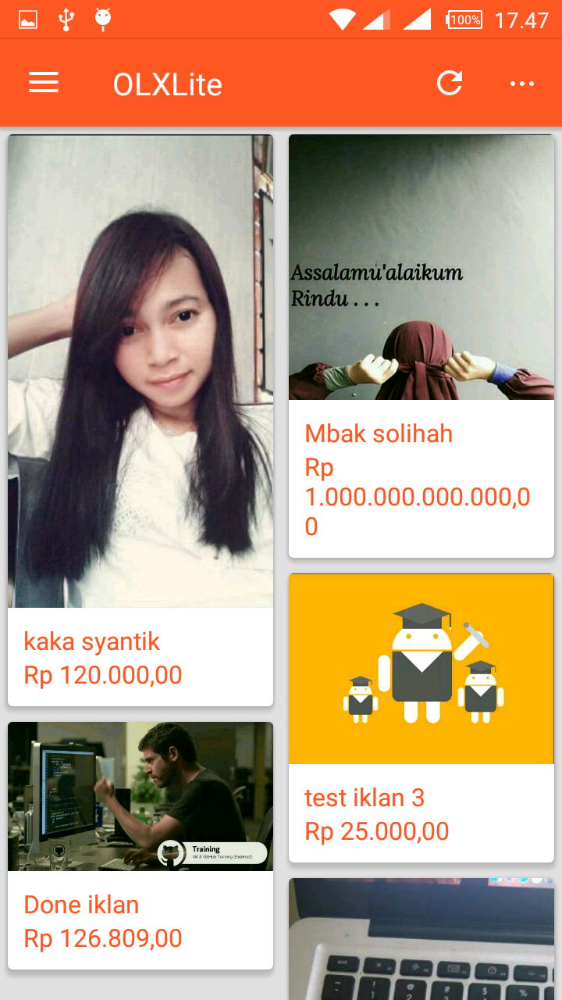
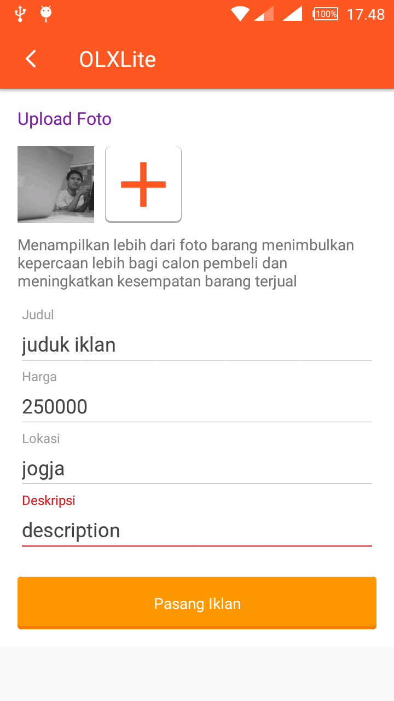

  
Image: OLXLite Android app.
Selamat datang di GDG Jogja codelab. Pada codelab kali ini anda akan belajar membuat aplikasi marketplace sederhana seperti OLX Android menggunakan Firebase.
Apa yang akan kamu pelajari?
- Login user dengan google plus
- Menampilkan data iklan dari Firebase Database.
- Menambahkan iklan ke database firebase.
- Upload gambar ke firebase storage.
- Mengimplentasikan firebase REST Api.
- Menangkap error aplikasi menggunakan Firebase Creash Reporting.
Apa yang kamu butuhkan untuk mengikuti codelab ini.
- Android Studio version 2.1+.
- Sample code.
- Device Android dengan versi 2.3+ dan Google Play services 9.8 atau lebih, atau sebuah Emulator dengan Google Play services 9.8 atau lebih
- Google app
- Jika kamu menggunakan device android kamu perlu USB Cable.
Setelah memnuhi sarat di atas selanjutnya, Setup configurasi Laptop atau komputer kamu..
Silahkan Clone GitHub repository dari command line kamu:
$ git clone git@github.com:ar-android/GDGYogyakartaCodelabs-03-02-2017.github.com $ git checkout codelab $ git pull
Dari android studioo, pilih android-start direktori ( ) from the sample code download (File > Open > .../GDGYogyakartaCodelabs-03-02-2017/codelab).
) from the sample code download (File > Open > .../GDGYogyakartaCodelabs-03-02-2017/codelab).
You should now have the android-start project open in Android Studio.
- Buka web Firebase console.
- Pilih Create New Project, and beri nama projectmu "OLXLite."
Connect your Android app
- Dari halaman overviewdari project baru kamu,
click Add Firebase to your Android app. - Masukkan codelab's package name:
com.ahmadrosid.olxlite. - Masukkan SHA1 dari signing keystore kamu. Jika kamu menggunakan standard debug keystore, Gunakan command dibawah ini untuk mendapatkan SHA1 hash:
keytool -exportcert -alias androiddebugkey -keystore ~/.android/debug.keystore -list -v -storepass androidTambahkan google-services.json kedalam projectmu
Setelah menambahkan package name dan SHA1 dan Continue, browser kamu secara otomatis akan mendownloads a configuration file untuk seluruh yang penting kedalam project kamu. Copy file google-services.json kedalam app direktor project kamu.
Dan google service plugin di projectmu
Google-services digunakan untuk mengurai data google-services.json untuk konfigurasi firebase. Masukkan kedalam build.gradle di direktory app dari project kamu:
apply plugin: 'com.google.gms.google-services'Sync grdle build
Untuk memastikan konfigurasi project grdle silahkan pilih Sync Project with Gradle Files () dari Android Studio tool bar.
Yang pertama sebelum melanjutkan membuat aplikasi mari kita aktifkan firebase auth google plus .
Firebase Realtime Database
Sebelum user melakukan aktifitas di aplikasi ini user harus login terlebih dahulu untuk itu kita perlu melakukan konfigurasi rule Firebase Database ini.
Buka project di Firebase console, pilih Database dan kemudian buka tab Rules.Buat rules seperti berikut ini:
{
"rules": {
".read": "auth != null",
".write": "auth != null"
}
}Untuk mempelajari lebih lanjut tentang firebase rules ini silahkan buka dokumentasi disini.
Konfigurasi Authentication APIs
Sebelum mengakses firebase auth silahkan buka konfigurasi Authentication dan ikuti langkah - langkah berikut ini.
- Buka Firebase console Dan buka project kamu.
- Buka tabSign In Method.
- Klik Toggle Google dan switch to enabled (biru)
- Klik Save pada result dialog.
Tambahkan Firebase Auth dependency
Firebase auth memungkinkan kita mengatur dan mengakses data user. Masukkan pada dependency app/build.gradle.
app/build.gradle
compile 'com.google.firebase:firebase-auth:9.4.0'Dan pada WelcomeActivity pada method checkAuth tambahkan code seperti dibawah ini:
WelcomeActivity.java
// checkAuth
FirebaseUser user = FirebaseAuth.getInstance().getCurrentUser();
if (user != null) {
open(HomeActivity.class);
} else {
open(LoginActivity.class);
}
Code di atas berfungsi untuk mengetahui apakah user telah login atau belum.
LoginActivity.class
Pada LoginPresenter di method loadConfig tambahkan code seperti berikut ini:
public void loadConfig() {
GoogleSignInOptions gso = new GoogleSignInOptions.Builder(GoogleSignInOptions.DEFAULT_SIGN_IN)
.requestIdToken(activity.getString(R.string.default_web_client_id))
.requestEmail()
.build();
mGoogleApiClient = new GoogleApiClient.Builder(activity)
.enableAutoManage(activity, connectionResult -> {
Log.d(TAG, "loadConfig: google play services error.");
})
.addApi(Auth.GOOGLE_SIGN_IN_API, gso)
.build();
mAuth = FirebaseAuth.getInstance();
mAuthListener = firebaseAuth -> {
FirebaseUser user = firebaseAuth.getCurrentUser();
if (user != null) {
mvpView.successLogin();
Log.d(TAG, "onAuthStateChanged:signed_in:" + user.getUid());
} else {
Log.d(TAG, "onAuthStateChanged:signed_out");
}
};
mAuth.addAuthStateListener(mAuthListener);
}
Pada firebaseAuthWithGoogle tambahkan code seperti berikut ini.
//firebaseAuthWithGoogle
public void firebaseAuthWithGoogle(GoogleSignInAccount acct) {
Log.d(TAG, "firebaseAuthWithGoogle:" + acct.getId());
showProgressDialog();
AuthCredential credential = GoogleAuthProvider.getCredential(acct.getIdToken(), null);
mAuth.signInWithCredential(credential)
.addOnCompleteListener(activity, task -> {
Log.d(TAG, "signInWithCredential:onComplete:" + task.isSuccessful());
if (!task.isSuccessful()) {
Log.w(TAG, "signInWithCredential", task.getException());
}
hideProgressDialog();
});
}
Kemudian untuk eksekusi login silahkan tambahkan code berikut ini pada method signIn:
public void signIn() {
Intent signInIntent = Auth.GoogleSignInApi.getSignInIntent(mGoogleApiClient);
mvpView.startResult(signInIntent, RC_SIGN_IN);
}
Firebase Realtime Database dependency
Untuk menggunakan firebase database silahkan tambahkan dependency berikut ini pada app/build.gradle:
Dependency in app/build.gradle
compile 'com.google.firebase:firebase-database:9.4.0'Untuk database ini akan kita gunakan untuk post data ke server pada kali ini silahkan buka NewIklanPresenter.class tambahkan code berikut ini
public void postNewIklan(String judul, String harga, String lokasi, String description, String url_photo) {
getMvpView().startLoading();
PostNewIklan postNewIklan = new PostNewIklan(getUid(), judul, harga, lokasi, description, url_photo);
String key = mDatabase.child("iklan").push().getKey();
Map postValues = postNewIklan.toMap();
Map childUpdates = new HashMap<>();
childUpdates.put("/iklan/" + key, postValues);
childUpdates.put("/users/iklan/" + getUid() + "/" + key, postValues);
mDatabase.updateChildren(childUpdates)
.addOnCompleteListener(getMvpView().getActivity(), task -> {
if (task.isComplete()){
getMvpView().stopLoading();
getMvpView().finishAddNewIklan();
}
});
}
Pada Firebase Rest api ini akan kita gunakan untuk membaca data iklan. Untuk mengimplementasikan nya silahkan buka class Endpoint.java tambahkna code seperti berikut ini.
Endpoint.java
public class Endpoint {
private static String uid = FirebaseAuth.getInstance().getCurrentUser().getUid();
public static final String MAIN_URL = "isikan sesuai url project firebase kamu";
private static final String AUTH = "?auth=screet code";
public static final String IKLAN = MAIN_URL + "iklan.json" + AUTH;
public static final String IKLAN_SAYA = MAIN_URL + "users/iklan/" + uid + ".json" + AUTH;
}
HomeFragmentPresenter.java
Pada case kali ini kita akan mengambil data list iklan pada HomeFragmentPresenter.java tambahkan code seperti berikut ini.
public void loadCommonIklan() {
getMvpView().startLoading();
getSubscraiber().add(
getIklan()
.subscribeOn(Schedulers.io())
.observeOn(AndroidSchedulers.mainThread())
.subscribe(this::onResponse, this::onError)
);
}
Selanjutnya kita parsing data yang telah kita terima dan tambahkan code berikut ini.
private void parseData(String json) {
data.clear();
JSONObject jobject = null;
try {
jobject = new JSONObject(json);
if (jobject.names().length() == 0) {
getMvpView().showMessage("Belumada iklan.");
} else {
for (int i = 0; i < jobject.names().length(); i++) {
String value = jobject.get(jobject.names().getString(i)).toString();
IklanModel iklanData = getParser().fromJson(value, IklanModel.class);
data.add(iklanData);
setAdapter();
}
}
} catch (JSONException e) {
e.printStackTrace();
}
}
Firebase creas reporting ini membantu kita untuk menangkap error pada aplikasi dan membuat log nya dengan ini akan memudahkan kita untuk proses pengembangan aplikasi apa bila aplikasi kita di akses oleh banyak device. Untuk menggunakan silahkan tambahkan dependency berikut ini.
compile 'com.google.firebase:firebase-crash:10.0.0'Contoh penggunaan dari crash reporting ini bisa dilihat di DetailIklanActivity.class
try {
IklanModel data = getIntent().getParcelableExtra("data");
String[] mImage = data.getUrl_image().split(",");
Glide.with(this).load(mImage[0]).centerCrop().into(img);
judul.setText(data.getJudul());
harga.setText(CurrencyHelper.format(data.getHarga()));
description.setText(data.getDescription());
getSupportActionBar().setTitle(data.getJudul());
}catch (Exception e){
FirebaseCrash.logcat(Log.DEBUG, "Error set data detail.", e.getMessage());
}Pada setiap action di aplikasi itu memiliki Exception nah exception ini biasa nya itu memiliki pesan error nah dengan mendapatkan report dari exception ini akan bisa memudahkan kita untuk menganalisa kesalahan dari aplikasi yang kita buat.
Selamat anda telah selesai mengikuti codelan kali ini berikut ini adalah materi yang kita pelajari.
Ringkasa
- Firebase Authentication
- Firebase Realtime Database
- Firebase Rest API
- Firebase Crash Reporting
Next Steps
- Gunakan Firebase pada aplikasi Android kamu.